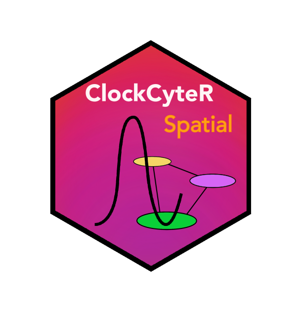
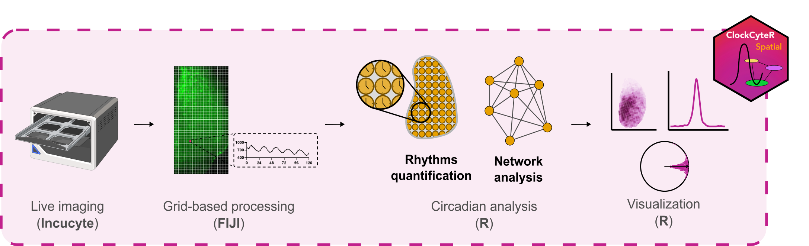

ClockCyteR.spatial 


Overview
ClockCyteR.spatial is an R package for spatiotemporal analysis of circadian rhythms from multichannel live-imaging time series. Starting from fluorescence intensity data extracted from user-defined regions of interest, it estimates circadian parameters (period, phase, amplitude) at single-cell resolution, maps them spatially, and computes network-level synchrony metrics. The package was developed for organotypic Suprachiasmatic Nucleus (SCN) slices but is applicable to any spatially resolved oscillatory time series.

Installation
You can install the development version of ClockCyteR.spatial from GitHub:
# install.packages("remotes")
remotes::install_github("cabaJr/ClockCyteR.spatial")Prerequisites: ImageJ preprocessing
Before using ClockCyteR.spatial, raw multichannel TIFF time series must be preprocessed in FIJI/ImageJ to generate the required _results folder structure. A set of ImageJ macros for this step is available in the companion repository: ClockCyteR.FIJI
The macros should be run in order:
-
1.Rotate_expand_stack— align and crop stacks to a consistent orientation -
2.Extract_hemislices— extract left/right SCN hemislices from the full stack -
3.Define_ROI— define the SCN nucleus ROI and extract intensity profiles -
4.Extract_cellgrid_cycle— create the measurement grid and extract per-cell intensities
Steps 3 and 4 generate the _results/ folders consumed by index_files().
Citation
If you use ClockCyteR.spatial in your research, please cite:
Ferrari et al. (2026, in press). A high-throughput live imaging platform to investigate circuit-dependent regulation of circadian rhythms in brain tissue.
Usage
A template to run the code using the toy dataset is available here.
# Copy the toy dataset to a writable location (avoids writing into the package folder)
base_dir <- setup_example() # or setup_example("~/my_analysis") for a persistent copy
params <- make_params(
channels = list(
Ch1 = list(
enabled = FALSE,
label = "red_channel",
grid_file = "Ch1_1_grid_vals.csv"
),
Ch2 = list(
enabled = TRUE,
label = "Syn-Axon-GCaMP6s",
grid_file = "Ch2_2_grid_vals.csv"
),
Ch3 = list(
enabled = FALSE,
label = "Brightfield",
grid_file = "Ch3_3_grid_vals.csv"
)
),
coherence = TRUE,
normalize_phase = TRUE,
time_res = 0.5,
intervals = list("interval1" = c(0, 72)),
time_window = TRUE,
pixel_fct = 2.82,
plotting = list(
y_limits_from_previous = FALSE,
align = list("Ch2" = "12"),
colors = list(
Ch2 = "darkgreen"
)
),
folder_structure = list(
base_dir = base_dir # change to your actual folder when using your own data
)
)
# index files ####
file_rows <- index_files(paths = params$paths)
# analyze project ####
analysis_results <- analyze_project(file_rows = file_rows,
params = params)
# calculate plot ranges
ranges <- ranges_calculation(params = params, file_rows = file_rows)
params$plotting$ranges <- ranges
# Visualization ####
# generate plots
generate_plots(file_rows = file_rows, params = params)
# pull plots in a simple folder
pull_plots(params = params, file_rows = file_rows)
# generate file reports
generate_reports(params = params, file_rows = file_rows)
generate_plot_type_reports(params = params, file_rows = file_rows)